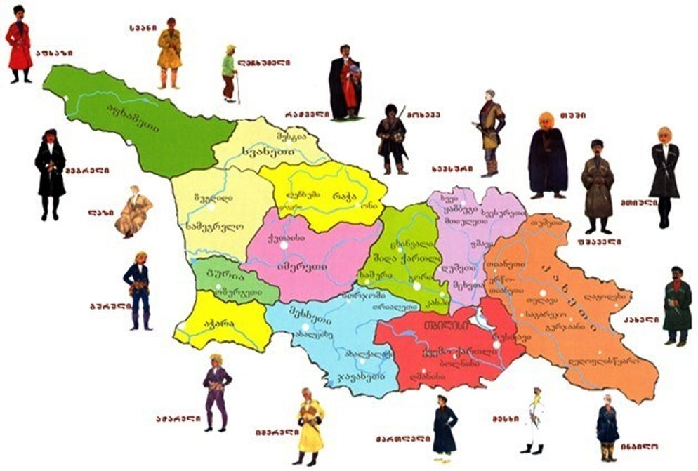
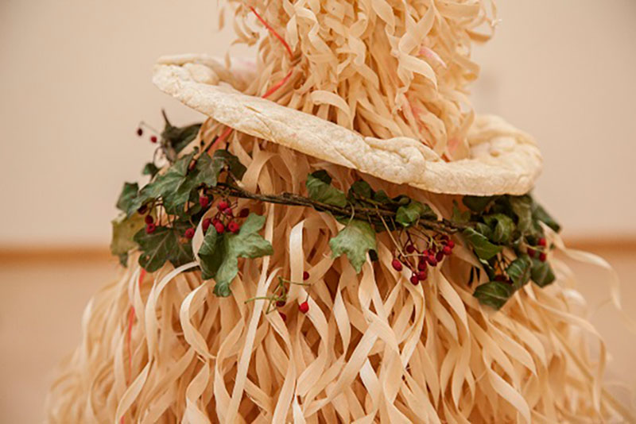

საახალწლო ტრადიციები საქართველოში

შობა-ახალი წელი განსაკუთრებული პერიოდია როგორც ბავშვებისთვის, ასევე უფროსებისთვის, ყველა დიდი სიხარულით ელოდება. ახალი წლის თარიღს, საქართველოში, ხშირად ცვლიდნენ — მეოთხე საუკუნეში 6 აგვისტოს აღნიშნავდნენ, მეშვიდე საუკუნიდან მეცხრე საუკუნის დამდეგამდე — სექტემბერში, შემდგომ კი, მარტში გადაიტანეს. მეთოთხმეტე საუკუნიდან ახალი წლის თარიღი, ევროპული კალენდრის მიხედვით, იანვარში დაწესდა.
საქართველოში ახალ წელთან ბევრი წარმართული
ტრადიცია იყო დაკავშირებული,
მაგალითად: „ბასილას“, „ჩიჩილაკის“ და სხვა კულტები. ჩიჩილაკის კულტი, განსაკუთრებით, გურიასა და სამეგრელოში იყო გავრცელებული. იმერეთში, გურიასა და სამეგრელოში ეს მორთულობა მცირე დეტალებით განსხვავდება ერთმანეთისგან. ცნობილია, რომ ჩიჩილაკს თხილის ტოტებისგან თლიან, რადგან თხილი, კაკალთან ერთად, ერთ-ერთ ყველაზე მოსავლიან მცენარედ ითვლებოდა. გრძელ თეთრწვერიან ჩიჩილაკს ძვირფასი სამკაულებით, ტკბილეულით და ხილით რთავდნენ, რაც ბარაქისა და ულევი სიტკბოების სიმბოლოდ აღიქმებოდა. ჩიჩილაკს „ბასილას წვერსაც“ ეძახიან და იგი წმინდა ბასილი დიდის სახელს უკავშირდება. ახალ წელსაც, საქართველოში, ხშირად, „ბასილის დღეს“ უწოდებდნენ, რადგან პირველ იანვარს მართლმადიდებლური ეკლესია წმინდა ბასილი დიდს იხსენიებს.

კიდევ ერთი საინტერესო ტრადიციაა
დაკავშირებული წმინდა ბასილის სახელთან. ძველ საქართველოში, სანამ ქრისტიანობა დამკვიდრდებოდა, ახალი წლის აღნიშვნა დაკავშირებული იყო მზის ღვთაებასთან. ქართული საახალწლო სუფრის განუყოფელი ნაწილი იყო პურისაგან გამომცხვარი „ბასილას“ ქანდაკება. როგორც ცნობილია, თავდაპირველად, ბასილა არა წმ. ბასილის, არამედ წარმართული ხანის მზის ღვთაების ქანდაკება იყო, ბასილას კვერები კი — მასთან დაკავშირებული ღვთაებები, რომლებსაც ჩვენი წინაპრები, შორეულ წარსულში, შვიდ მნათობთა სახით სცემდნენ თაყვანს. მხოლოდ III საუკუნის შემდეგ, ქრისტიანულმა ეკლესიამ ახალი წლის დღესასწაული წმ. ბასილის ხსოვნას დაუკავშირა და, ამ დროიდან, ქართულ საახალწლო სუფრაზე მდებარე მზის ღვთაების ქანდაკებას „ბასილა“ ეწოდა.
საქართველოს ყველა კუთხე საკუთარი
დამახასიათებელი კულტურით გამოირჩევა, არც საახალწლო ტრადიციებია გამონაკლისი: მიუხედავად იმისა, რომ ძირითადი საახალწლო ტრადიცია ყველა კუთხეში საერთო იყო, რიტუალები თითქმის ყველგან განსხვავდებოდა.
აქ შეგიძლიათ იპოვოთ მცირე ინფორმაცია სხვადასხვა კუთხეების შესახებ:
იმერეთი
გურია
სამეგრელო
რაჭა